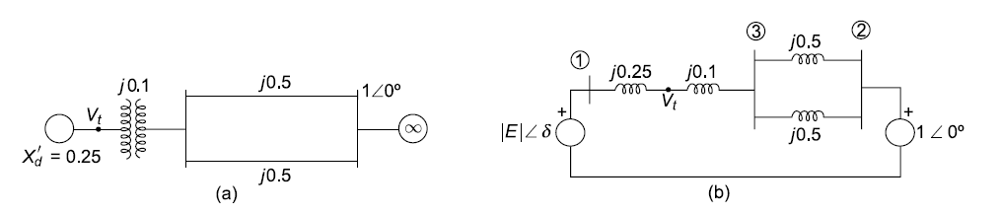
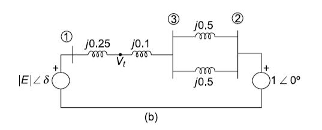
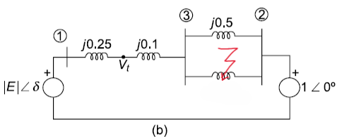
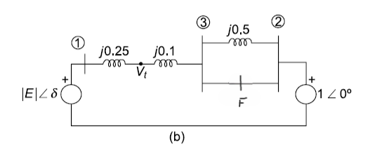
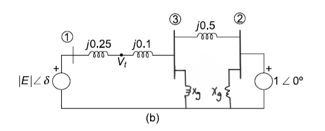
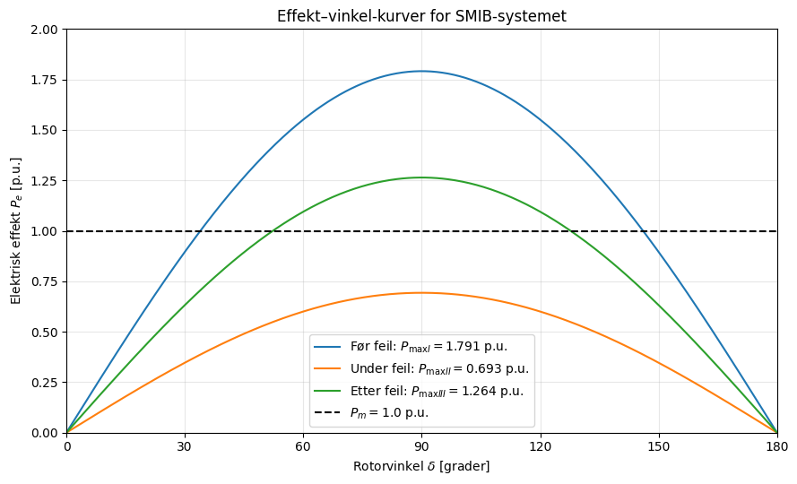

Løsningsforslag – Øving 8#
Generatoren leverer \(P = 1{,}0\) p.u. til infinitetsbussen. Figuren gir \(X'_d = 0{,}25,\qquad X_t = 0{,}10,\qquad X_L = 0{,}50\ \text{p.u.}\) for hver av de to parallelle linjene. Videre er \(|V_t| = |V_\infty| = 1{,}0\) p.u. Velg \(V_\infty = 1\angle 0^\circ\) som referanse, og se bort fra resistans.

1. Spenning bak transientreaktansen#
Før feil er linjene parallelle:
Effekt-vinkel-ligningen mellom terminalen og infinitetsbussen gir
Dermed er
Strømmen fra generatoren mot nettet er
Spenningen bak transientreaktansen blir
Altså
2. Største overførbare effekt#
For hvert driftstilfelle er \(P_e = P_{\max}\sin\delta\).
Friskt system. Total overføringsreaktans, \(X_{transfer}\) er
To port modell#
Finne ny øverføringsreaktans mellom de to portene port 1 og 2#
Friskt system – to parallelle linjer#
Buss 1 er generatorens indre node, buss 2 er infinitetsbussen, og buss 3 er knutepunktet etter transformatoren.
Siden bus 3 ikke er spenningsatt er her \(I_3 = 0\) og vi kan bruke kron reduksjon til å eliminere buss 3 og sitte igjen med overføringadmittans mellom buss 1 og 2; \(Y'_{12}\)

Admittansmatrisen før feil er
Her er \(Y_{22}=-j4\), mens \(Y_{33}=-j\frac{20}{7}-j4=-j\frac{48}{7}\).
Buss \(n=3\) elimineres med Kron-reduksjon:
Koblingsleddet mellom buss 1 og 2 blir
Tilsvarende blir diagonalelementene
Den reduserte matrisen, med bussrekkefølge \((1,2)\), er dermed
Bevis#
Vi får da at kron-reduksjon fungerer fordi vi finner at overføringsadmittansen er det inverse av overføringsreaktansen $\(Y'_{12}=\frac{1}{X_{transfer,1}}=\frac{1}{j0,6}=j\frac{5}{3}\)\( Fra effektligningen får vi \)P_{max,I}\( \)\(P_{max,I} = |E_1||E_2|Y'_{12}| = 1,0747\cdot1\cdot\frac{5}{3}=1,7911\)$
Under feilen#
Ved feil midt på linja

Introduserer vi feilstedet som buss F

Trefasekortslutning midt på én linje#
Den friske linjen er fortsatt koblet mellom buss 3 og 2. Den feilrammede linjen deles i to halvdeler, hver med reaktans \(j0{,}25\) og admittans \(-j4\). Feilpunktet \(F\) er kortsluttet til jord.
Før feilpunktet jordes, har nettverket fire noder med rekkefølgen \((1,3,2,F)\):
Siden \(V_F=0\), er feilpunktet en jordet node, ikke en intern node med ukjent spenning som skal Kron-reduseres. De to halvlinjene bidrar derfor som shuntadmittanser til diagonalen ved buss 3 og buss 2.

Matrisen for de tre gjenværende bussene blir
Med bussrekkefølgen \((1,3,2)\) defineres admittans ut fra generator (mellom buss 1 og 3; \(y_e\)), admittans på linjestykke (mellom buss 3 og 2; \(y_L\)) og shuntadmittans (fra feilsted til jord; \(y_g\))
der \(y_L\) er admittansen til den friske linjen, og \(y_f\) er admittansen til hver halvdel av den feilrammede linjen mot jord.
Admittansmatrisen under feilen for de tre gjenværende bussene blir $\( Y_{\mathrm{feil}}= \begin{bmatrix} y_e & -y_e & 0\\ -y_e & y_e+y_L+y_g & -y_L\\ 0 & -y_L & y_L+y_g \end{bmatrix}. \)$
Ved innsetting av verdiene fås $\( \boxed{ Y_{\mathrm{feil}}= \begin{bmatrix} -j\frac{20}{7} & j\frac{20}{7} & 0\\ j\frac{20}{7} & -j\frac{62}{7} & j2\\ 0 & j2 & -j6 \end{bmatrix}. } \)$
Nå Kron-reduseres buss \(n=3\). Koblingsleddet blir
De to diagonalelementene beregnes på samme måte:
Dermed er
Diagonalelementene er ikke motsatt lik koblingsleddet fordi nettet under feilen også har forbindelser til jord. Det er koblingsleddet \(Y_{12,\mathrm{ny}}=j20/31\) som bestemmer koeffisienten foran \(\sin\delta\):
Én linje frakoblet.
3. Effekt–vinkel-kurvene#
Tegn alle tre for \(0^\circ \le \delta \le 180^\circ\). Alle er null ved \(0^\circ\) og \(180^\circ\), og har topp ved \(90^\circ\). Kurven for friskt system ligger høyest, kurven under feil lavest, og kurven med én linje frakoblet ligger mellom dem. Driftspunktet før feil er \(\delta_0 \approx 33{,}94^\circ\) ved \(P_m = 1{,}0\) p.u.
